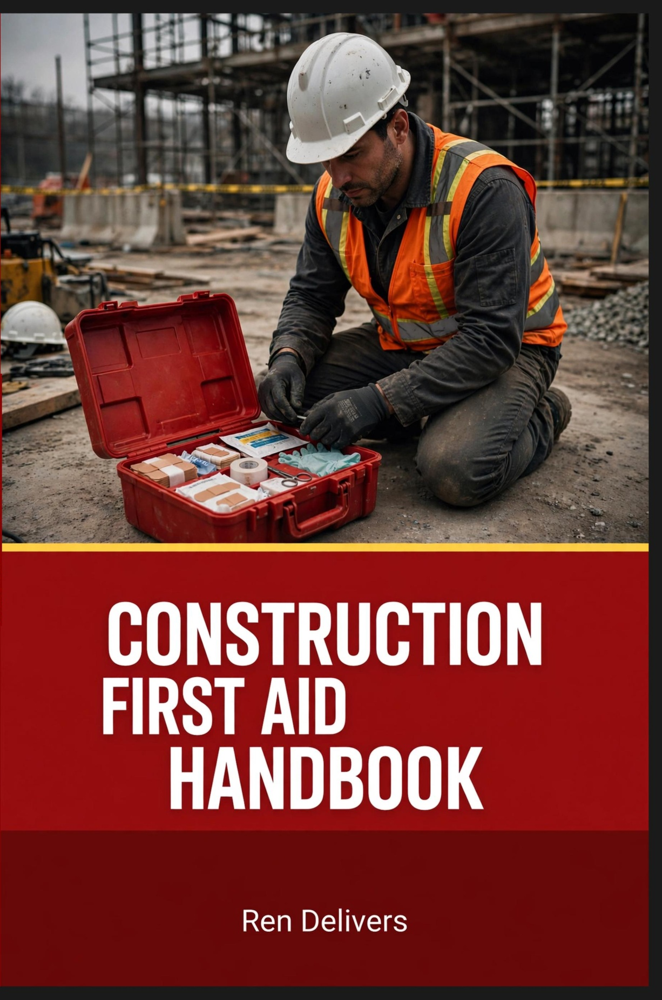

Short answer: Heat illness comes in stages, and the stages are the whole game. Heat cramps are a warning. Heat exhaustion — heavy sweating, pale clammy skin, nausea, dizziness — means stop, shade, cool, and sip water now. Heat stroke — body temperature at or above 103°F, hot red skin, confusion, slurred speech, seizures, collapse — is a kill-you emergency: call 911 and cool the worker as fast as you possibly can. Prevention is water, rest, and shade, plus acclimatization: nobody's body is ready for full production in the heat on day one, and new workers die of this in their first days on the job.
Every summer, workers go down on jobsites doing work their crews did the week before without a problem. The difference is almost never toughness. It is water, rest, shade, and whether anybody recognized the symptoms in time.
Know the stages: symptoms every worker should recognize
Heat cramps. Muscle cramps and spasms — usually legs, arms, or gut — during or after hard work in the heat, with heavy sweating. Stop work, rest in the shade, drink water or an electrolyte drink, and do not go back to full effort until the cramps pass. Cramps are the body sending the first bill.
Heat exhaustion. Heavy sweating; cold, pale, clammy skin; a fast, weak pulse; nausea or vomiting; headache; dizziness; weakness and tiredness; possible fainting. This worker is done working: move them to shade or a cooler place, loosen clothing, cool them with wet cloths or a shower, and have them sip water. Get medical help if they are vomiting, if symptoms get worse instead of better, or if they are not improving within an hour — exhaustion slides into stroke.
Heat stroke. Body temperature of 103°F or higher; hot, red skin — dry or damp; a fast, strong pulse; headache, dizziness, nausea; confusion and slurred speech that can look exactly like a man who is drunk or belligerent; seizures; unconsciousness. The sign crews miss: a worker pouring sweat all morning who stops sweating and starts acting wrong is not having a bad day. That is the emergency, and the clock is running.
When someone goes down: cool first
1. Call 911. Say it plainly: a worker is down with suspected heat stroke. Put a second person on the site address and flagging the ambulance in.
2. Cool them as fast as you can. Move them to shade and start cooling immediately — do not wait for the ambulance to start. Cold-water or ice immersion, even in a tub, a trough, or a water-filled trash can, cools fastest. If that is not available, wet the entire body with water and fan vigorously, pack ice or soaked towels around the neck, armpits, and groin, and keep re-wetting. Every minute at a stroke-level temperature does damage; cooling on site in the first minutes is what saves people.
3. Nothing to drink. A confused, vomiting, seizing, or unconscious worker gets no fluids by mouth — they cannot protect their airway. Fluids are for the conscious heat-exhaustion case, sipped, not chugged.
4. One person stays, one person talks. The coolest head on site stays with the worker and keeps cooling and reporting changes; someone else owns the phone, the gate, and the trip to the hospital. This is the same response discipline as any jobsite emergency — the full playbook is in our jobsite first aid guide.
Water, rest, shade: the prevention basics
Water. OSHA's standing guidance: drink before you are thirsty — about 1 cup (8 ounces) every 15 to 20 minutes during moderate work in the heat, up to 1 quart an hour, and no more than 6 quarts in a day. Small and often beats a gallon at lunch. On long shifts with heavy sweating, electrolytes count too — a sports drink or a salty meal puts back what sweat takes out. The employer's duty to have cool, potable drinking water on site is written at 1926.51(a) — warm water nobody wants to drink does not get drunk, and undrunk water does not prevent anything.
Rest. Scheduled breaks, not breaks-when-somebody-drops. The hotter it gets and the heavier the work, the more of the hour is rest. Watch the heat index, not just the thermometer — humidity is what stops sweat from working.
Shade. A real shaded rest area, big enough for the crew to sit down in, close to the work. A man who has to stand in the sun on his break has not rested.
Watch each other. A buddy system and a foreman who actually looks: confusion, stumbling, slurred speech, and stopped sweating are visible from twenty feet away if somebody's job is to see them. And plan the day — heavy work early, lighter work in the peak heat, and an emergency plan the crew has heard before the hot week starts.
Acclimatization: the rule that saves new guys
The body adapts to heat gradually — blood volume, sweat rate, and salt balance all adjust over up to 14 days of progressive exposure. There is no shortcut and no toughness exception; a fit worker new to the heat is at more risk than a less fit worker who has been in it for two weeks. Most heat deaths happen in the first few days on the job.
New workers: OSHA's recommended schedule starts at about 20% of the normal duration of work in the heat on day one, increasing by no more than 20% each day. Workers returning after a week or more away — vacation, a cool-weather assignment, time off — start at about 50% and build back over several days. During the ramp, assign a buddy, check in often, and treat any symptom as a stop, not a shrug. If a heat wave arrives mid-ramp, the ramp restarts conservative — the calendar does not care about your schedule.
The legal frame, briefly: federal OSHA enforces heat through the General Duty Clause and its heat National Emphasis Program rather than one finished heat-specific standard — and several state-plan states, including California, Washington, Oregon, and Minnesota, enforce their own heat rules with specific temperature triggers. Know which rule covers your site before the hot week, not during it.

Heat stroke is a first aid chapter: the Construction First Aid Handbook
When a worker goes down, the crew is the first responder — the ambulance is the second. The Construction First Aid Handbook by Ren Delivers covers heat stroke alongside bleeding control, CPR and AED, electrocution, and crush injuries, in jump-to playbook chapters a crew can flip straight to in the moment. It was written by Brandon, a 30-year construction veteran, for the gang box — not the classroom.
Paperback — $29.95 on Amazon Kindle — $9.99 Both books — First Aid & OSHA
Common questions
How do you tell heat exhaustion from heat stroke?
Exhaustion: heavy sweating, cold pale clammy skin, fast weak pulse, nausea, dizziness. Stroke: temperature 103°F or higher, hot red skin, fast strong pulse, confusion, slurred speech, collapse. When in doubt, treat it as stroke — call 911 and cool them.
Should you give a downed worker water?
No. Never give fluids to someone who is confused, vomiting, seizing, or unconscious — they can inhale it. Cool them externally and let the medics handle fluids.
How long does acclimatization take?
Up to 14 days of gradually increasing exposure. New workers start near 20% of a normal shift in the heat and add no more than about 20% a day; returning workers restart near 50%.
How much water should a worker drink in the heat?
About a cup every 15 to 20 minutes, up to a quart an hour and no more than 6 quarts a day — before thirst, not after.
This page is a plain-language summary of federal OSHA guidance, not legal or medical advice. State-plan states can have their own heat rules — check yours.